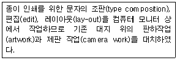

전자출판기능사 (2010-07-11 기출문제)
1과목: 출판론
1. 책의 발행인과 발행처, 저자와 저작권에 대한 공지사항을 명시한 지면은 무엇인가?
- 서문
- 헌사
- 간기면
- 감사의 말
(정답률: 80%)

2. 평판 제판을 할 때 판을 연마하는 목적으로 가장 옳은 것은?
- 판의 표면적을 감소시키기 위해
- 화선부의 보수성을 좋게 하기 위해
- 비화선부에 감광액 부착 및 잉크롤러의 미끄러짐을 도와주기 위해
- 판면의 오염 및 산화물을 제거하기 위해
(정답률: 70%)
3. 어떤 특정한 출판물을 조성하기 위한 최초의 의도적 과정으로, 어떤 유형의 출판물을 낼 것인가를 사전에 결정하는 작업은?
- 출판영업
- 출판기획
- 출판편집
- 출판유통
(정답률: 98%)
4. 출판물의 제작 과정을 순서대로 옳게 나타낸 것은?
- 조판 → 제판 → 인쇄 → 제책
- 조판 → 제판 → 제책 → 인쇄
- 제책 → 제판 → 조판 → 인쇄
- 제판 → 조판 → 제책 → 인쇄
(정답률: 68%)
5. 종이의 가장자리를 가지런하게 재단하지 않고 접지를 한 상태로 책을 만드는 제책 장식은?
- 언컷에지(uncut edge)
- 언셜(uncial)
- 파일 제책
- 무선철 제책
(정답률: 89%)
6. 일반적인 플렉소용 감광성 수지판의 제작 공정을 옳게 나타낸 것은?
- 네거티브필름 → 뒷면빛쬠 → 주빛쬠 → 현상 → 건조 → 후처리 → 후빛쬠
- 네거티브필름 → 주빛쬠 → 현상 → 뒷면빛쬠 → 건조 → 후처리 → 후빛쬠
- 포지티브필름 → 주빛쬠 → 현상 → 건조 → 후빛쬠 → 뒷면빛쬠 → 후처리
- 포지티브필름 → 주빛쬠 → 현상 → 건조 → 뒷면빛쬠 → 후처리 → 후빛쬠
(정답률: 62%)
7. 다음 중 노란색(yellow)의 파장 범위에 대하여 가장 옳게 나타낸 것은?
- 488~493nm
- 498~530nm
- 558~569nm
- 573~578nm
(정답률: 47%)
8. 다음 중 국제표준연속간행물번호의 약어로 옳은 것은?
- ISO
- ISBN
- ISSN
- DOI
(정답률: 80%)
9. 먼셀표색계에서 먼셀의 5주요 색상이 아닌 것은?
- R(빨강)
- Y(노랑)
- P(보라)
- W(흰색)
(정답률: 96%)
10. 일반적인 오프셋인쇄기에 대한 설명으로 옳은 것은?
- 볼록판인쇄는 모두 평판 오프셋 인쇄기를 사용한다.
- 비화선부에 잉크가 묻어 고무통으로 전이된다.
- 판에서 종이로 전이되는 직접인쇄방식이다.
- 판통, 고무통, 압통의 3통이 접촉하면서 인쇄를 한다.
(정답률: 66%)
11. 단행본의 발행 목적에 따른 분류가 아닌 것은?
- 학술서
- 번역서
- 교양서
- 전문서
(정답률: 86%)
12. 다음 중 속장과 겉장을 연결하기 위한 제책 공정은?
- 재단
- 접지
- 장합
- 면지붙이기
(정답률: 72%)
13. 도서의 반품조건부 위탁판매제도에 대한 설명으로 가장 거리가 먼 것은?
- 위탁판매는 수요예측이 비교적 분명한 성격을 지닌 상품에 적절한 판매제도이다.
- 반품조건부라는 거래조건으로 인해 위탁 기간이 오래된 중고도서조차도 회수할 수밖에 없다.
- 서점은 위탁받은 출판물에 대한 위험부담이 없기 때문에 판매에 소극적이다.
- 위탁 판매는 일단 판매가 된 후에 대금 지불이 결정되므로 대금 회수가 길어질 수밖에 없다.
(정답률: 50%)
14. 제판용 감광재료는 빛과의 반응에 의해 상을 형성하는데 현재 널리 이용되고 있는 포지티브형 PS판은 주로 어떠한 광반응을 일으켜 상을 형성하는가?
- 광가교
- 광중합
- 광이량화
- 광분해
(정답률: 76%)
15. 같은 크기의 직사각형 빨강과 자주를 나란히 놓았을 때, 경계부근에서 빨강은 더욱 선명하고 깨끗하게 보이며, 경계면에서 먼 쪽은 탁해 보이는 현상은 주로 어떠한 대비현상 때문인가?
- 연변대비
- 색상대비
- 명도대비
- 채도대비
(정답률: 71%)
16. 다음 중 “이미 감광성을 주었다”라는 뜻을 가진 인쇄판은?
- 와이프온판
- PS판
- 난백판
- 스크린판
(정답률: 72%)
17. 잡지와 서적의 합성어로서 서적이면서도 저널한 성격을 지니고 있으며 많은 소재를 모아 편집하였고 광고가 있으며 다채롭게 레이아웃한 점이 잡지와 비슷하나 발행방식이 정기적이 아니라는 점이 특징인 것은?
- 총서(叢書)
- 무크(mook)
- 문고(文庫)
- 전집(全集)
(정답률: 68%)
18. 출판물의 기획단계에서 고려해야 할 사항으로 가장 거리가 먼 것은?
- 출판사의 성격
- 출판사의 자본 규모
- 삽입할 사진의 크기
- 대상 독자층
(정답률: 78%)
19. 다음 인쇄 방식 중 일반적으로 잉크 피막의 두께를 가장 두껍게 할 수 있는 것은?
- 볼록판인쇄
- 스크린인쇄
- 평판인쇄
- 오모판인쇄
(정답률: 47%)
20. 특정한 출판아이디어에 따른 시장 점유 가능성을 파악하기 위해 선행되어야 할 설문사항으로 가장 거리가 먼 것은?
- 어떤 독자를 대상으로 할 것인가?
- 독자는 어떤 이유에서 그 책을 구입할 것인가?
- 또 다른 유형의 경쟁서적이나 유사한 출판물이 있는가?
- 제판, 인쇄할 업체는 결정되었는가?
(정답률: 90%)
2과목: 전자 출판
21. 다음 중 웹사이트 제작에서 저작도구의 활용 방식에 해당되지 않는 것은?
- 아이콘 방식
- 페이지 방식
- 넘버링 방식
- 시간축 방식
(정답률: 44%)
22. 다음 중 이미지 파일 포맷으로만 낭려한 것은?
- EPS, TIFF, JPG
- BMP, PCX, HWP
- DOC, PRC, JPG
- DOC, PCX, JPG
(정답률: 87%)
23. 전자출판물 매체의 성격에 대한 설명으로 틀린 것은?
- 인쇄매체와 비교하여 내용의 장기 보관성, 검색성 등에서 우수하다.
- 소리와 동영상, 애니메이션 등이 제공되어 영상매체와 유사하다.
- 종이첵에 비해 보관이 용이하며 보존력이 뛰어나다.
- 인터넷 신문으로 정보를 제공할 수 있다.
(정답률: 76%)
24. 전자출판물에 저장되어 있는 디지털 데이터의 특성을 가장 옳게 설명한 것은?
- 보관이 어렵다.
- 데이터의 복제가 손쉽다.
- 검색 기능을 갖출 수 없다.
- 데이터베이스(data base)화가 어렵다.
(정답률: 92%)
25. 다음에서 설명하고 있는 전자출판의 유형은?

- CD-ROM 출판
- 패키지형 출판
- DTP 출판
- 온라인 출판
(정답률: 84%)
26. 전자출판을 위한 컴퓨터 시스템의 기본 구성에서 CPU라고 하는 시스템의 총칭은?
- Mode
- Channel
- Saturation
- Gamut
(정답률: 54%)
27. 출판의 전 과정에 걸친 업무가 신속히 진행되어야 성공의 가능성을 갖는 기획 유형은?(문제오류로 보기 내용이 정확하지 않습니다. 정학한 보기 내용을 아시는분 께서는 오류신고를 통하여 내용 작성 부탁 드립니다.)
- 입력장치
- 중앙처리장치
- 제어장치
- 출력장치
(정답률: 46%)
28. 디지털 기술을 기반으로 하는 전자추판매체의 특징이 아닌 것은?
- 혼합성이 뛰어나 멀티미디어 정보 제작이 쉽게 이루어 질 수 있다.
- 정보의 일부분이 전혀 손상되지 않으며, 누구나 쉽게 접근하여 정보를 이용할 수 있다.
- 여러 사람이 실시간으로 동시에 정보에 접근하여 이용할 수 있다.
- 데이터에 유연성아 있으므로 다른 매체로 변환하여 제작할 수 있다.
(정답률: 72%)
29. 전자출판을 위한 데이터의 입·출력 방식이 아닌 것은?
- 패러럴(Parallel)방식
- 오브젝트(Object)방식
- 시리얼(Serial)방식
- 파이어 와이어(Fire Wire)방식
(정답률: 57%)
30. 전자책(e-book)의 제작에 사용되는 언어방식으로 가장 거리가 먼 것은?
- HTML
- XML
- DRM
(정답률: 65%)
31. 전자출판의 유형별 종류를 나열한 것 중 틀린 것은?
- 패키지형 전자출판 : CD-ROM, DVD-ROM
- 종이 출판물 : DTP
- 온라인형 전자출판 : 인터넷 도서관, CTS
- 온라인형 전자출판 : 인터넷 전자출판
(정답률: 64%)
32. 그래픽전문 프로그램으로 3차원 모델링과 애니메이션 등의 작업을 수행할 수 있는 통합그래픽 프로그램은?
- 3D studio Max
- Director
- DTP
- illustrator
(정답률: 85%)
33. 다음 중 인터넷 출판의 정보 표현 언어가 아닌 것은?
- HTML
- XML
- JAVA
- Acrobat
(정답률: 90%)
34. HTML 미약한 기능을 보완하고, SGML의 복잡한 구조를 단순화시킨 것으로서 지금까지 사용해 왔던 HTML과 마찬가지로 웹상에서 문서를 전송하도록 설계된 국제 표준 텍스트 형식은 무엇인가?
- XML
- FLASH
- DOI
- FTP
(정답률: 81%)
35. 전자출판시스템의 작업순서를 옳게 나타낸 것은?
- 문자입력→OPI서버→RIP→편집→이미지 세터→현상기
- 문자입력→RIP→이미지 세터→OPI서버→편집→현상기
- 문자입력→OPI서버→편집→RIP→이미지 새터→현상기
- 문자입력→편집→RIP→이미지 새터→OPI서버→현상기
(정답률: 60%)
36. 그래픽 이미지의 화상처리 및 기록 방식 가운데 벡터(Vector) 방식에 대한 설명으로 옳은 것은?
- 이미지의 구성이 점에 의해 이우어지는 방식이다.
- 이미지를 점들의 집합으로 처리하고 기억하는 방식이다.
- 확대하거나 축소해도 이미지 품질이 좋다.
- 이미지를 확대할 경우 정교함이 떨어지는 단점이 있다.
(정답률: 80%)
37. 화면책(Network Screen Book)을 만들 때 사용하는 소프트웨어가 아닌 것은?
- 나모웹에디터
- 핫도그프로
- 각텔99
- 드림위버
(정답률: 69%)
38. 하이퍼링크의 구조적 특징에 대한 설명으로 옳은 것은?
- 순차적 접근 방식으로만 원하는 정보에 접근할 수 있다.
- 다양성을 바탕으로 선형구조를 지니며, 순차적 검색환경을 제공한다.
- 단방향 네트워크 방식으로 이용자에게 정보를 제공한다.
- 하이퍼링크에 의한 정보는 독자의 의도된 선택에 따라 이동이 가능하도록 되어 있다.
(정답률: 72%)
39. 컴퓨터의 화면상에서 편집된 형태대로 최종 출력물을 얻을 수 있는 기능을 의미하는 것은?
- HDTV
- WYSIWYG
- VIDEOTEXT
- TELETEXT
(정답률: 84%)
40. 다음 중 종이책 제작 과정의 전산화와 가장 거리가 먼 것은?
- WYSIWYG
- CTS
- CD-ROM
- DTP
(정답률: 50%)
3과목: 전산 편집
41. 디지털 방식에서 사용하는 화상의 해상도를 나타내는 단위로서 1인치당 망점(dot)의 수를 표시하는 것은?
- dpi
- contrast
- bit
- pdi
(정답률: 86%)
42. 점, 선, 면과 기호 단위를 써서 통계의 내용이나 전달하고자 하는 부분을 쉽게 이해할 수 있도록 표현하는 그림을 무엇이라 하는가?
- 심볼
- 캐리커처
- 캡션
- 다이어그램
(정답률: 74%)
43. 출판 편집에서 편집면의 폭이 180mm, 2단 구성이고 단간이 10mm 이면 단폭은 얼마나 되겠는가?
- 65mm
- 75mm
- 80mm
- 85mm
(정답률: 69%)
44. 편집면을 세로로 분할하여 얻어지는 세로면을 무엇이라고 하는가?
- 가름선(cutter)
- 단(column)
- 필드(field)
- 펼침면(spread)
(정답률: 75%)
45. 국전지를 8절로 잘라 만든 책으로 대부분 단행본보다는 디자인 계통의 잡지를 비롯하여 각종 여성 종합지, 전문 잡지 등에 많이 사용되는 규격은?
- 국배판형
- 사륙배판형
- 타블로이드판형
- 변형재단판형
(정답률: 74%)
46. 편집디자인을 형태별로 분류한 것으로 잘못 연결된 것은?
- 롤 스타일 - 레터헤드, DM
- 시트 스타일 - 명함, 안내장
- 서적 스타일 - 단행본, 매뉴얼, 브로슈어
- 스프레드 스타일 - 카탈로그, 팸플릿, 일간 신문
(정답률: 68%)
47. 다음 중 출판물을 생산하기 위한 출판 활동을 순서대로 옳게 나타낸 것은?
- 마케팅 단계 → 제작단계 → 기획단계 → 편집단계
- 편집단계 → 마케팅 단계 → 기획단계 → 제작단계
- 기획단계 → 편집단계 → 제작단계 → 마케팅단계
- 기획단계 → 마케팅단계 → 제작단계 → 편집단계
(정답률: 82%)
48. 사진원고는 인쇄방법과 종이에 따라 선수를 맞게 지정해 주어야 한다. 다음 중에서 아트지와 같이 고급지에 오프셋 인쇄할 때 가장 적합한 선수(lpi)는?
- 45
- 75
- 1⑤
- 175
(정답률: 68%)
49. 정가판매제에 대하여 가장 옳게 설명한 것은?
- 도매서점이 최종 소비자 가격을 정하는 제도
- 소비자(독자)가 최종 소비자 가격을 정하는 제도
- 출판사가 최종 소비자 가격을 정하는 제도
- 국가가 소비자 보호원과 협의하여 최종 소비자 가격을 정하는 제도
(정답률: 63%)
50. 사진원고를 지정할 때, 사진의 불필요한 부분을 제거하고 상하, 좌우 윤곽을 결정하여 레이아웃하는 작업을 무엇이라고 하는가?
- 트래핑
- 트리밍
- 러프스케치
- 일러스트레이션
(정답률: 82%)
51. 편집기획 회의에서 결정된 내용과 제작 방법을 정한 뒤 페이지 순서대로 제목이나 내용 요약을 적어 놓은 것을 무엇이라고 하는가?
- 편집배열표
- 레이아웃표
- 일러스트레이션
- 편집기획서
(정답률: 66%)
52. 레이아웃을 조직화하는 하나의 방편으로 면 또는 공간을 꾸미기 위해 적절히 분할된 격자선으로 출판물 레이아웃에서 효율적인 판면을 잡기 위한 기초 설계도의 역할을 하는 것은?
- 판권
- 그리드
- 마진
- 판형
(정답률: 87%)
53. 다음 중 책의 판형에 대하여 그 크기를 잘못 나타낸 것은?
- 신국판 : 1⑤ x 148㎜
- 크라운판 : 176 x 248㎜
- 4x6배판 : 188 x 257㎜
- 4x6판 : 127 x 188㎜
(정답률: 61%)
54. 다음 중 성인을 대상으로 하는 단행본이나 잡지의 본문에 많이 사용되고 있으며, 가장 읽기 쉽고 안정감을 주는 문자의 크기는?
- 6.5포인트
- 7.5포인트
- 10.5포인트
- 16.5포인트
(정답률: 91%)
55. 레이아웃의 과정에서 완성원고를 작성하기 이전까지의 작업순서로 섬네일(thumbnail)을 기초로 하여 더욱 구체화하여 작성한 레이아웃을 무엇이라고 하는가?
- 도미넌트(dominant)
- 스프레드(spread)
- 러프스케치(rough sketch)
- 콤프리헨시브(comprehensive)
(정답률: 52%)
56. 편집문서의 구조와 명칭에서 단(段)을 가로와 세로로 분할한 한 면의 단위(unit)를 무엇이라고 하는가?
- 여백(margin)
- 펼친면(spread)
- 필드(field)
- 여백면(space)
(정답률: 73%)
57. 다음 중 사진원고를 사용하는 목적으로 가장 거리가 먼 것은?
- 본문의 이해를 돕기 위해
- 본문의 내용 가운데 특정 부분을 시각화하기 위해
- 지면의 빈 공간을 채우기 위해
- 독자의 시선을 끌기 위해
(정답률: 89%)
58. 다음 중 책등에 들어가는 내용으로 가장 적합하지 않은 것은?
- 책제목
- 저자명
- 출판사명
- 발행인 명
(정답률: 83%)
59. 사진원고 교정시 이미지를 밝게 처리하거나, 선명도 증가 효과, 윤관선 보강 등의 기능과 가장 관계없는 것은?
- Brightness
- Desaturation
- contrast
- Sharpen
(정답률: 68%)
60. 잡지나 단행본의 색 지정에 있어서 유의사항이 아닌 것은?
- 주된 독자층의 성별, 나이, 교육수분, 기호 등을 고려하여 지정한다.
- 독자에게 불안감, 초조감을 주는 배색 지정은 지양하는 것이 좋다.
- 종이의 재질에 따라 발색 효과의 차이를 고려해서 지정해야 한다.
- 색의 조합은 한 지면에 될 수 있는 한 많은 종류를 사용하여 화려하게 지정한다.
(정답률: 95%)